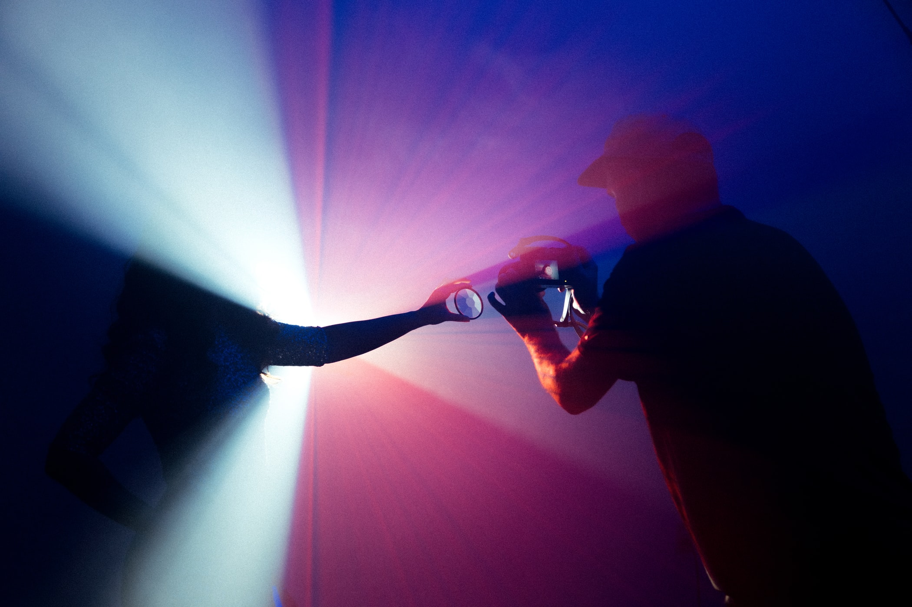
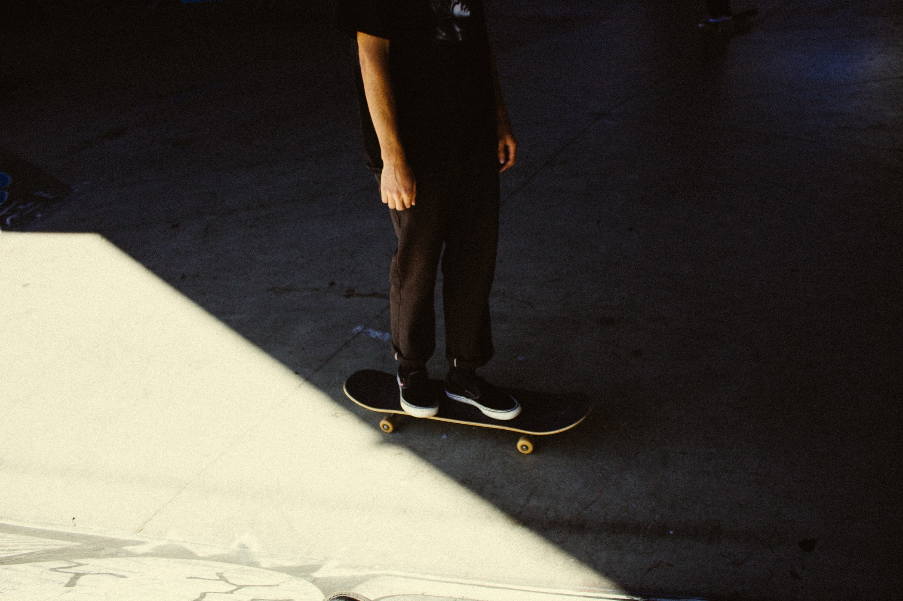

The Problem
Given the unfortunate reality that is the covid stricken world that we currently live in, the average person in North America has had basically no choice but to significantly increase their usage of the internet. Unfortunately, mental and physical health has been a problem in North American society for decades, and obligating people to spend so much more time isolated, in a chair, and in front of a screen is only going to make it a lot worse. It has now become more important than ever that a tool that mitigates the prevalence and severity of the issues associated with increases in screen time be created and offered to the public.
Research
Current Affairs
Surveys
Analysis
Personas


Journey Maps
Click the image!
×